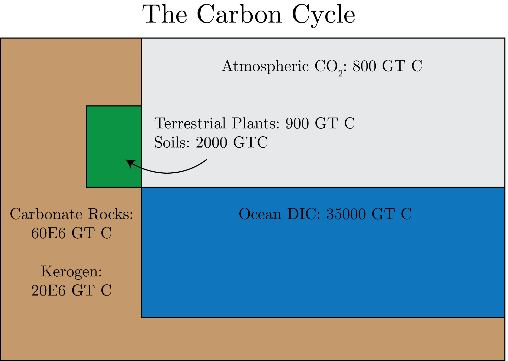

We remember the decay equation:
\begin{equation}
N = N_0 \exp\left[-\lambda t\right].
\end{equation}
The big question is about the variations in $N_0$ over time, specifically in the atmosphere of CO$_2$.
There are two major processes that affect this:
Production rate: variation in geomagnetic field and solar activity (Milankovitch Cycles)
Carbon cycle: reorganization of carbon resevoirs
Anthropocene: human influence
Now, we remember that:
\begin{equation}
^{14}\text{C age} = -8033 \times \log F_m.
\end{equation}
We can translate this to calendar age as described by Fig. 1, the "calibration curve"
Fig. 1: The $^{14}$C Calibration Curve. The blue region is uncertianty around the dashed best fit line.
Production Rate Change
Of importance is the production rate change, which we diagramize in Fig. 2.
Here, we can look at the production rate of another radiogenic isotope $^{10}$Be, which we know has cyclical changes in production given the deflection of cosmic rays by the Earth's magnetic field.
Fig. 2: The production rate of $^{10}$Be used to derive geomagnetic changes (GM), that compares well with stacked data.
Additionally we can see that there is a large effect on $^{14}$C, such as in Fig. 3 and the relation of the virtual dipole moment (GM field variations), there is a large varition that we need to correct for in $^{14}$C.
Fig. 3: The Virtual Dipole Moment (a measure of the GM field) causes large variations in $^{14}$C.
We correct for this by removing the trends from the geometric field and solar variations to then look at the changes in the Earth's Carbon cycle, as roughly shown in Fig. 4.
The residuals show that about half the variation is from these planetary changes, with the rest from the Carbon Cycle internal drives itself.
Fig. 4: Removal of geomagnetic and solar activity from $^{14}$C data.
Carbon Cycles
Now, all the changes in $^{14}$C are from changes in the Earth's carbon cycle, with the major resevoirs presneted in Fig. 5.

Fig. 4: A schematic of the Earth's carbon cycle and the major carbon resevoirs.
From data, we know that there are only small changes in atmospheric $\delta^{13}$C and therefore the surface ocean, given equilibration time scales.
However, we can use deep ocean $\delta^{13}$C, and specifically the ventillation age to describe the natural carbon cycle variations.
We can look at the surface resevoir age of $\Delta^{14}$C (exchanged from the amtmosphere), which is different from the atmosphere (which has a value of 0), and see that the patterns are almost exactly the same as ocean circulation, specifically inverse relations.
So, in the N. Atlantic we get the least anomaly versus in the N. Pacific, which have the largest changes.
Anthropocene
The Seuss Effect is the increased decrease in $\delta^{13}$C and $\Delta^{14}$C, due to the isotope signature of anthropogenic emissions being greatly negative compared to the natural variations in the carbon cycle.
We can look at Problem Set 3 for more information on human influence.